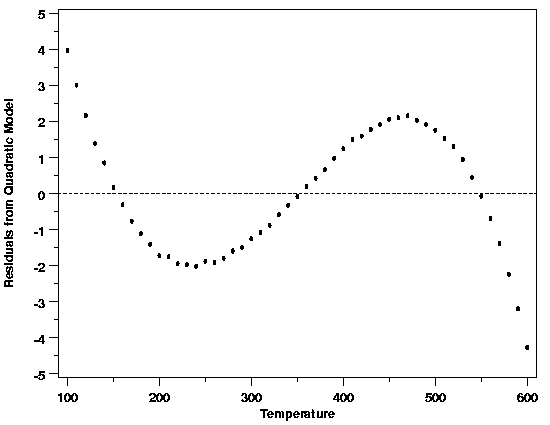
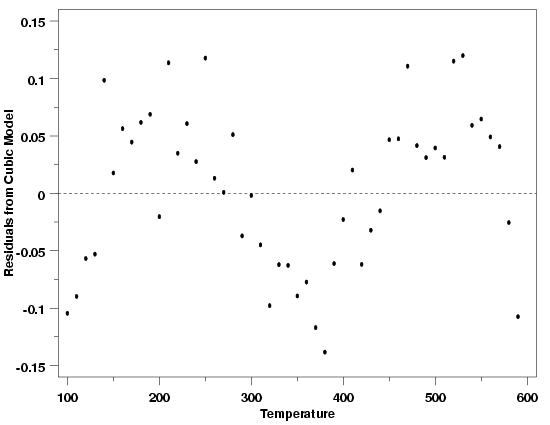

|
4.
Process Modeling
4.4. Data Analysis for Process Modeling 4.4.5. If my current model does not fit the data well, how can I improve it?
|
|||
| Residual Plots Guide Model Refinement | If the plots of the residuals used to check the adequacy of the functional part of the model indicate problems, the structure exhibited in the plots can often be used to determine how to improve the functional part of the model. For example, suppose the initial model fit to the thermocouple calibration data was a quadratic polynomial. The scatter plot of the residuals versus temperature showed that there was structure left in the data when this model was used. | ||
| Residuals vs Temperature: Quadratic Model |  | ||
| The shape of the residual plot, which looks like a cubic polynomial, suggests that adding another term to the polynomial might account for the structure left in the data by the quadratic model. After fitting the cubic polynomial, the magnitude of the residuals is reduced by a factor of about 30, indicating a big improvement in the model. | |||
| Residuals vs Temperature: Cubic Model |  | ||
| Increasing Residual Complexity Suggests LOESS Model | Although the model is improved, there is still structure in the residuals. Based on this structure, a higher-degree polynomial looks like it would fit the data. Polynomial models become numerically unstable as their degree increases, however. Therfore, after a few iterations like this, leading to polynomials of ever-increasing degree, the structure in the residuals is indicating that a polynomial does not actually describe the data very well. As a result, a different type of model, such as a nonlinear model or a LOESS model, is probably more appropriate for these data. The type of model needed to describe the data, however, can be arrived at systematically using the structure in the residuals at each step. | ||

{kind=link}
{kind=link}